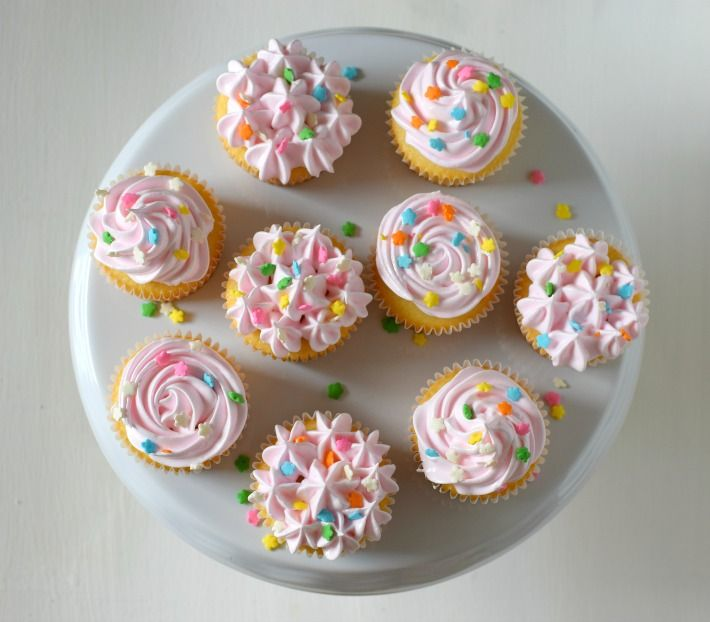

Ingredientes
Para la masa:
- 120 gramos de harina para todo uso
- 140 gramos de azúcar
- 1/2 cucharadita de polvo de hornear
- 1/8 cucharadita de sal
- 40 gramos de mantequilla sin sal, a temperatura ambiente
- 120 ml de leche líquida
- 1 huevo
- 1/2 cucharadita de extracto de vainilla
Para el glaseado de merengue esponjoso:
- 1 taza (198 gramos) de azúcar blanca
- 1/3 taza de agua
- 1/4 cucharadita de cremor tártaro o vinagre blanco)
- 1/8 cucharadita de sal
- 2 claras de huevo
Pasos
Primer paso
Para hacer la masa: Precalienta el horno a 325°F .
Segundo paso
Coloca en un tazón la harina, azúcar, polvo para hornear, sal y mantequilla y batir con la batidora eléctrica a velocidad baja, hasta que todo esté integrado y se logre una consistencia arenosa.
Tercer paso
Agregue poco a poco la mitad de la leche y bata hasta integrar.
Cuarto paso
Mezcle el huevo, la vainilla y la leche restante y agregue a la mezcla y siga batiendo hasta que esté suave, pero sin batir en exceso.
Quinto paso
Colocar la mezcla en los moldes de cupcakes a los que habrá colocado los capacillos y llevar al horno por unos 20 a 25 minutos y estén dorados. Pruebe si están listos insertando un palillo y si sale seco, están listos. Tenga cuidado de no hornearlos en exceso, ya que se pondrán duros.
Sexto paso
Transfiera los cupcakes a una rejilla para que se enfríen completamente antes de decorar.
Séptimo paso Para preparar el glaseado: En una olla pequeña colocar el azúcar, agua, cremor tártaro y sal y llevar a ebullición a fuego medio, revolviendo hasta que el azúcar este completamente disuelta.
Octavo paso En el tazón de la batidora colocar las dos claras de huevo, encender la batidora y agregar poco a poco el jarabe preparado, batiendo hasta que se formen picos firmes y baje la temperatura del tazón, unos 7 minutos aproximadamente.
Noveno paso Agregue la vainilla; si vas a agregar colorante, hazlo en este momento. Batir un poco más hasta integrar y usar como desee.
Decorar los cupcakes, servir y disfrutar!